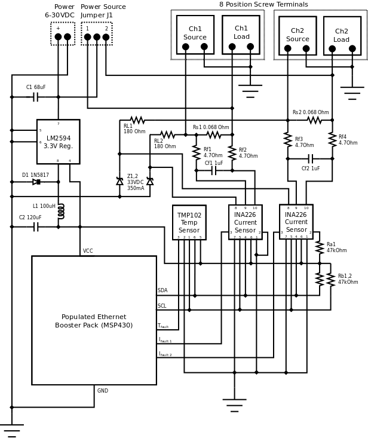
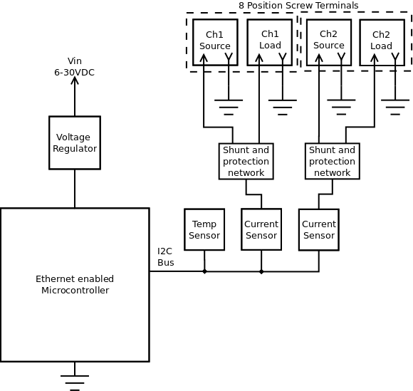
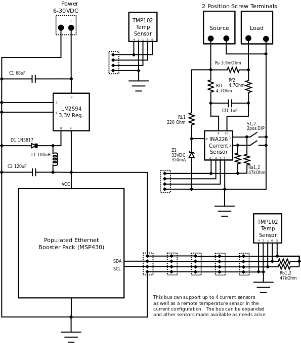

SEP Step 5: Detailed Design
Added by Aaron Harper almost 10 years ago
EPS Detailed Design¶
Introduction¶
While the preliminary design is nearly a complete detailed design, the PCB design needs to be completed before assembly can begin. This will be completed while parts are on order, as some have a 2-3 week lead time in the quantities required.
Design Criteria Review¶
- EPSRR 1.1 The EPS board uses a Texas Instruments MSP430 microcontroller to measure and store the sensor data
- EPSRR 1.2 the EPS board is made from components which are rated beyond the specification as listed, and the system will operate without direct intervention by an operator.
- EPSRR 2.1 The EPS board is designed in such a way that it may be installed by any person with solar power or electrical wiring experience.
- EPSRR 2.2 The EPS board will have screw holes to mount the board using #10 screws. Alternatively, a DIN rail clip may be used.
- EPSRR 2.3 The EPS board can draw it's power from either monitored load or from another 6-30VDC source.
- EPSRR 3.1 The EPS board shall measure predefined parameters.
- EPSRR 3.1.1 The EPS board measures the ambient temperature in the enclosure using a sensor on the board.
- EPSRR 3.1.2 The EPS board measures voltages of two separate circuits directly with a chip that has built in isolation.
- EPSRR 3.1.3 The EPS board limits the input voltage to the sensor to safe levels using a zener and current limiter.
- EPSRR 3.1.4 The EPS board measures the current of two separate circuits using a directly with a chip that has built in isolation.
- EPSRR 3.2 The EPS board transmits measurement data or fault conditions to the server using a MAC chip with full TCP/IP stack.
- EPSRR 3.2.1 The EPS board will transmit measurement data on demand (web page request).
- EPSRR 3.2.2 The EPS board will be capable of transmitting measurement data on a schedule (FTP or email).
- EPSRR 4.1 The EPS board consumes minimal power. Design maximum is 24mW.
- EPSRR 4.2 See EPSRR 2.3.
- EPSRR 4.3 The EPS board meets all criteria in this area, having a tolerance for massive overvoltage and 12 bit accuracy.
- EPSRR 4.4 The EPS board measures temperature within from -20 to 85C with 12 bit accuracy.
- EPSRR 4.5 The EPS board meets all criteria in this area, having a tolerance for massive overcurrent and 12 bit accuracy.
- EPSRR 4.6 The EPS board meets all criteria in this area, having a MAC controller IC with a fully functional TCP/IP stack and Ethernet Jack with Magnetics.
- EPSRR 6.1 The EPS board is read using standard web protocols which are standardized across all platforms.
- EPSRR 6.2 The EPS board uses standardized connections including Screw terminals and Ethernet.
- EPSRR 8.1 The EPS board is optimized for ease of production.
- EPSRR 8.2 See ESPRR 8.1.
- EPSRR 9.2 The production units appear to cost around $60.00 in parts.
- EPSRR 11.4 Attention has been paid into the durability of the design to keep waste to an absolute minimum.
Block Diagram¶
Schematic¶

Bill Of Materials¶
| Schematic | Description | Package |
|---|---|---|
| C1 | 68uF Capacitor | SMD |
| C2 | 120uF Capacitor | Axial |
| Cf1 | 1uF capacitor | SMD |
| Cf2 | 1uF capacitor | SMD |
| D1 | 1N5817 Schottky diode | SMD |
| L1 | 100uH Inductor | SMD |
| Ra1 | 47k Ohm .25W Resistor | SMD |
| Rb1 | 47k Ohm .25W Resistor | SMD |
| Rb2 | 47k Ohm .25W Resistor | SMD |
| Rf1 | 4.7 Ohm .25W resistor | SMD |
| Rf2 | 4.7 Ohm .25W resistor | SMD |
| Rf3 | 4.7 Ohm .25W resistor | SMD |
| Rf4 | 4.7 Ohm .25W resistor | SMD |
| RL1 | 180 Ohm .5W resistor | SMD |
| RL2 | 180 Ohm .5W resistor | SMD |
| Rs1 | 068 Ohm 10W resistor | Axial |
| Rs2 | 068 Ohm 10W resistor | Axial |
| U1 | LM2594M-3.3/NOPB Voltage regulator | SSOP-8 |
| U2 | TMP102 Temp sensor (I2C) | SSOP-6 |
| U3 | INA226 Current and voltage sensor | SSOP-10 |
| U4 | INA226 Current and voltage sensor | SSOP-10 |
| 3 position jumper block | Std | |
| 5mm barrel jack, 2.1mm center pole | Std | |
| 8 position screw terminals | Std | |
| Populated Ethernet Booster Pack (MSP430 MCU) | Board | |
| EPS PC board | Board |
Budget¶
| Schematic | Description | Prototype Cost | Production Cost |
|---|---|---|---|
| C1 | 68uF Capacitor | $.49 | $1.15 |
| C2 | 120uF Capacitor | $0.62 | $0.62 |
| Cf1 | 1uF capacitor | $0.14 | $1.15 |
| Cf2 | 1uF capacitor | $0.14 | $1.15 |
| D1 | 1N5817 Schottky diode | $0.27 | $0.19 |
| L1 | 100uH Inductor | $0.18 | $0.09 |
| Ra1 | 47k Ohm .25W Resistor | $0.37 | $0.03 |
| Rb1 | 47k Ohm .25W Resistor | $0.37 | $0.03 |
| Rb2 | 47k Ohm .25W Resistor | $0.37 | $0.03 |
| Rf1 | 4.7 Ohm .25W resistor | $0.37 | $0.03 |
| Rf2 | 4.7 Ohm .25W resistor | $0.37 | $0.03 |
| Rf3 | 4.7 Ohm .25W resistor | $0.37 | $0.03 |
| Rf4 | 4.7 Ohm .25W resistor | $0.37 | $0.03 |
| RL1 | 180 Ohm .5W resistor | $0.37 | $0.03 |
| RL2 | 180 Ohm .5W resistor | $0.37 | $0.03 |
| Rs1 | 068 Ohm 10W resistor | $2.14 | $2.14 |
| Rs2 | 068 Ohm 10W resistor | $2.14 | $2.14 |
| U1 | LM2594M-3.3/NOPB Voltage regulator | $2.70 | $2.70 |
| U2 | TMP102 Temp sensor (I2C) | $5.95 | $1.69 |
| U3 | INA226 Current and voltage sensor | $6.33 | $3.38 |
| U4 | INA226 Current and voltage sensor | $6.33 | $3.38 |
| 3 position jumper block | $.22 | $.13 | |
| 5mm barrel jack, 2.1mm center pole | $4.95 | $1.12 | |
| 8 position screw terminals | $2.45 | $2.45 | |
| Populated Ethernet Booster Pack (MSP430 MCU) | $25.00 | $25.00 | |
| EPS PC board (in qty. 10) | $0.00 | $12.00 | |
| Subtotal | $58.21 | $60.75 | |
| Labor | $1762.50 | $135.52 | |
| TOTAL | $1820.71 | $196.27 |
Note: this budget reflects 8 hours of PCB layout which will be complete by 25 FEB 2013
Schematic_1.png (57.8 kB)
{kind=link}
Block_Diagram.png (23.2 kB)
{kind=link}
Replies (3)
RE: SEP Step 5: Detailed Design - Added by Jeremy Wright almost 10 years ago
You've done this differently than we did on Shepard, and I think it's something that we should talk about during the next Shepard documentation meeting.
RE: SEP Step 5: Detailed Design - Added by Aaron Harper almost 10 years ago
I did... but that's because of the specific situation. As you may have guessed, I skipped a lot of the prelim work, moving straight into production for the most part. Also, the mechanicals of the design are also much simpler than Shepard, since the project is purely electronic. At this point I need go/no go from the client to proceed to ordering and assembly, so this is as good as a point to do it as any.
This abbreviated process probably shouldn't be followed in a large multi-discipline project.
RE: SEP Step 5: Detailed Design - Engineering Change - Added by Aaron Harper almost 10 years ago
Power/Temp Monitor and Control System (EPS/ECLSS) Detailed Design¶
Introduction¶
This is a temperature and power monitoring system for the radio/battery cabinets on wireless internet service providers (WISP) repeaters. Other uses of this project are satellite and HAB payloads. Attention will be paid to make the project multi-role, but not at the expense of the primary stakeholders (WISPs). The PCB design needs to be completed before assembly can begin. This will be completed while parts are on order, as some have a 2-3 week lead time in the quantities required.
Design Criteria Review¶
- EPSRR 1.1 The EPS board uses a Texas Instruments MSP430 microcontroller to measure and store the sensor data
- EPSRR 1.2 the EPS board is made from components which are rated beyond the specification as listed, and the system will operate without direct intervention by an operator.
- EPSRR 2.1 The EPS board is designed in such a way that it may be installed by any person with solar power or electrical wiring experience.
- EPSRR 2.2 The EPS board will have screw holes to mount the board using #10 screws. Alternatively, a DIN rail clip may be used.
- EPSRR 2.3 The EPS board can draw it's power from any 6-30VDC source.
- EPSRR 3.1 The EPS board shall measure predefined parameters.
- EPSRR 3.1.1 The EPS board measures the ambient temperature in the enclosure using a sensor on the board.
- EPSRR 3.1.2 The EPS board measures voltages of two separate circuits directly with a chip that has built in isolation.
- EPSRR 3.1.3 The EPS board limits the input voltage to the sensor to safe levels using a zener and current limiter.
- EPSRR 3.1.4 The EPS board measures the current of two separate circuits using a directly with a chip that has built in isolation.
- EPSRR 3.2 The EPS board transmits measurement data or fault conditions to the server using a MAC chip with full TCP/IP stack.
- EPSRR 3.2.1 The EPS board will transmit measurement data on demand (web page request).
- EPSRR 3.2.2 The EPS board will be capable of transmitting measurement data on a schedule (FTP or email).
- EPSRR 4.1 The EPS board consumes minimal power. Design maximum is 24mW.
- EPSRR 4.2 See EPSRR 2.3.
- EPSRR 4.3 The EPS board meets all criteria in this area, having a tolerance for massive overvoltage and 12 bit accuracy.
- EPSRR 4.4 The EPS board measures temperature within from -20 to 85C with 12 bit accuracy.
- EPSRR 4.5 The EPS board meets all criteria in this area, having a tolerance for massive overcurrent and 12 bit accuracy.
- EPSRR 4.6 The EPS board meets all criteria in this area, having a MAC controller IC with a fully functional TCP/IP stack and Ethernet Jack with Magnetics.
- EPSRR 6.1 The EPS board is read using standard web protocols which are standardized across all platforms.
- EPSRR 6.2 The EPS board uses standardized connections including Screw terminals and Ethernet.
- EPSRR 8.1 The EPS board is optimized for ease of production.
- EPSRR 8.2 See ESPRR 8.1.
- EPSRR 9.2 The production units appear to cost around $85.00 in parts.
- EPSRR 11.4 Attention has been paid into the durability of the design to keep waste to an absolute minimum.
Block Diagram¶

Schematic¶

Bill Of Materials¶
Control Board| Schematic | Description | Package |
|---|---|---|
| C1 | 68uF Capacitor | SMD |
| C2 | 120uF Capacitor | Axial |
| D1 | 1N5817 Schottky diode | SMD |
| L1 | 100uH Inductor | SMD |
| Rb1 | 47k Ohm .25W Resistor | SMD |
| Rb2 | 47k Ohm .25W Resistor | SMD |
| U1 | LM2594M-3.3/NOPB Voltage regulator | SSOP-8 |
| CN1 | Molex70555-0038 Locking connector | thru hole |
| CN2 | Molex70555-0038 Locking connector | thru hole |
| CN3 | Molex70555-0038 Locking connector | thru hole |
| CN4 | Molex70555-0038 Locking connector | thru hole |
| CN5 | Molex70555-0038 Locking connector | thru hole |
| J1 | 5mm barrel jack, 2.1mm center pole | Std |
| EPS Board (MSP430 MCU and MAC IC) | Board |
| Schematic | Description | Package |
|---|---|---|
| CN1 | Molex70555-0038 Locking connector | Thru hole |
| Cf1 | 1uF capacitor | SMD |
| 2 position screw terminals | Std | |
| Rf1 | 4.7 Ohm .25W resistor | SMD |
| Rf2 | 4.7 Ohm .25W resistor | SMD |
| RL1 | 220 Ohm .5W resistor | SMD |
| Rs | 3.9 mOhm 5W resistor | Axial |
| Ra1 | 47k Ohm .25W Resistor | SMD |
| Ra2 | 47k Ohm .25W Resistor | SMD |
| S1,2 | 2 pos DIP switch | Thru hole |
| U3 | INA226 Current and voltage sensor | SSOP-10 |
| Current Sensor PC Board | Board | |
| Molex 50-57-9404 (mating connector for cable) | Cable | |
| Molex 50-57-9404 (mating connector for cable) | Cable | |
| Alpha Wire 1174c SL005 4cond 22ga | Cable |
| Schematic | Description | Package |
|---|---|---|
| CN1 | Molex70555-0038 Locking connector | Thru hole |
| U2 | TMP102 Temp sensor (I2C) | SSOP-6 |
| Temperature Sensor PC Board | Board | |
| Molex 50-57-9404 (mating connector for cable) | Cable | |
| Molex 50-57-9404 (mating connector for cable) | Cable | |
| Alpha Wire 1174c SL005 4cond 22ga | Cable |
Preliminary Budget¶
Control Board| Schematic | Description | Prototype Cost | Production Cost |
|---|---|---|---|
| C1 | 68uF Capacitor | $0.49 | $1.15 |
| C2 | 120uF Capacitor | $0.62 | $0.62 |
| D1 | 1N5817 Schottky diode | $0.27 | $0.19 |
| L1 | 100uH Inductor | $0.18 | $0.09 |
| Rb1 | 47k Ohm .25W Resistor | $0.37 | $0.03 |
| Rb2 | 47k Ohm .25W Resistor | $0.37 | $0.03 |
| U1 | LM2594M-3.3/NOPB Voltage regulator | $2.70 | $2.70 |
| CN1 | Molex70555-0038 Locking connector | 0.97 | $0.96 |
| CN2 | Molex70555-0038 Locking connector | $0.97 | $0.96 |
| CN3 | Molex70555-0038 Locking connector | $0.97 | $0.96 |
| CN4 | Molex70555-0038 Locking connector | $0.97 | $0.96 |
| CN5 | Molex70555-0038 Locking connector | $0.97 | $0.96 |
| J1 | 5mm barrel jack, 2.1mm center pole | $4.95 | $1.12 |
| EPS Board (MSP430 MCU and MAC IC) | $0.00 | $12.00 | |
| Populated Ethernet Booster Pack (MSP430 MCU) | $25.00 | $25.00 | |
| Labor | $1,362.50 | $120.12 | |
| SUBTOTAL | $1,402.30 | $167.85 |
| Schematic | Description | Prototype Cost | Production Cost |
|---|---|---|---|
| CN1 | Molex70555-0038 Locking connector | $0.97 | $0.96 |
| Cf1 | 1uF capacitor | $0.14 | $1.15 |
| Phoenix Contact 1714971 two position screw terminals | $1.34 | $1.31 | |
| Phoenix Contact 1714971 two position screw terminals | $1.34 | $1.31 | |
| Rf1 | 4.7 Ohm .25W resistor | $0.37 | $0.03 |
| Rf2 | 4.7 Ohm .25W resistor | $0.37 | $0.03 |
| RL1 | 220 Ohm .5W resistor | $0.37 | $0.03 |
| Rs | 4 mOhm 4W resistor Ohmite 14AFR004E | $1.98 | $1.23 |
| Ra1 | 47k Ohm .25W Resistor | $0.37 | $0.03 |
| Ra2 | 47k Ohm .25W Resistor | $0.37 | $0.03 |
| S1,2 | 2 pos DIP switch | $0.53 | $0.49 |
| U3 | INA226 Current and voltage sensor | $6.33 | $3.38 |
| Current Sensor PC Board | $0.00 | $4.00 | |
| Molex 50-57-9404 (mating connector for cable) | $0.68 | $0.37 | |
| Molex 50-57-9404 (mating connector for cable) | $0.68 | $0.37 | |
| Alpha Wire 1174c SL005 4cond 22ga | $1.00 | $1.00 | |
| Labor | $225.00 | $62.09 | |
| SUBTOTAL | $241.84 | $77.81 |
| Schematic | Description | Prototype Cost | Production Cost |
|---|---|---|---|
| CN1 | Molex70555-0038 Locking connector | $0.97 | $0.96 |
| U2 | TMP102 Temp sensor (I2C) | $5.95 | $1.69 |
| Temperature Sensor PC Board | $0.00 | $2.00 | |
| Molex 50-57-9404 (mating connector for cable) | $0.68 | $0.37 | |
| Molex 50-57-9404 (mating connector for cable) | $0.68 | $0.37 | |
| Alpha Wire 1174c SL005 4cond 22ga | $1.00 | $1.00 | |
| Labor | $75.00 | $29.21 | |
| SUBTOTAL | $84.28 | $35.60 |
| Board | Prototype Cost | Production Cost |
|---|---|---|
| Control Board | $1,402.30 | $167.85 |
| Current Sensor Board | $241.84 | $77.81 |
| Current Sensor Board | $241.84 | $77.81 |
| Temperature Sensor Board | $84.28 | $35.60 |
| TOTAL COST | $1969.96 | $359.07 |
Block_Diagram.png (23.2 kB)
{kind=link}
Schematic_1.png (59.1 kB)
{kind=link}
(1-3/3)